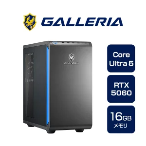
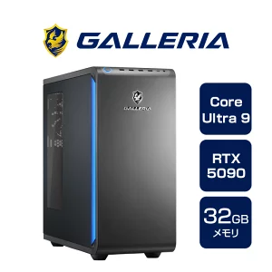
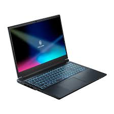
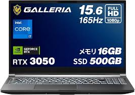

⚠️ 2026年現在のゲーミングPC購入事情
まず最初にお伝えしなければならない厳しい現実があります。2026年現在、予算25万円以下で「最新かつ高性能な新品のゲーミングPC」を手に入れるのは非常に困難になっています。
もしどうしても25万円以下に予算を抑えたい場合は、中古パソコンや数世代前の型落ちモデルを狙うことになります。しかし、中古や型落ち品は故障リスクや今後のゲームの要求スペックに追いつけなくなる寿命の短さを考えると、初心者にはあまりおすすめできません。
そこで本記事では、価格以上の圧倒的なパフォーマンスと手厚いサポートで絶対に後悔しない、BTOパソコンの王道「ドスパラのGALLERIA（ガレリア）」に絞って、本当におすすめできる新品モデルだけを厳選してご紹介します。
目次
💡 これだけは知っておきたい！超・簡単PC用語解説
初心者の方でもこの記事がスラスラ読めるように、よく出てくる言葉を簡単に解説します。
- CPU (シーピーユー)
- パソコンの「頭脳」。ここが良いと、ゲームやあらゆる処理全体のスピードが速くなります。（例：Core Ultraなど）
- GPU / グラボ (グラフィックボード)
- 映像を描く「絵描き職人」。ゲーミングPCで一番重要なパーツ！これが良いほど、映像が綺麗で滑らかになります。（例：RTX 5060など）
- メモリ / VRAM (ビデオメモリ)
- パソコンの「作業机」。机が広い（数字が大きい）ほど、同時に複数のソフトを開いたり、重いゲームを余裕で動かせます。グラボ専用の作業机が「VRAM」です。
- SSD / ストレージ
- データをしまう「引き出し」。ゲーム本体や動画を保存する場所です。SSDだとゲームのロード時間が劇的に短くなります。
- fps / フレームレート
- 1秒間に画面が切り替わる「パラパラ漫画の枚数」。60fpsなら1秒間に60枚。144fpsなど数字が大きいほど、ヌルヌル滑らかに動いて敵を狙いやすくなります。
- BTO (ビートゥーオー)
- Build To Orderの略。お店がパーツを組み立てて売ってくれるパソコンのこと。購入時に「メモリを増やして！」と自分好みにカスタマイズできるのが最大の魅力です。
ゲーミングPCの選び方：見るべきポイント
ゲーミングPCを選ぶ際に必ずチェックすべきは、CPU・GPU・メモリ・SSD容量です。また、高スペックを狙うなら消費電力も確認しましょう。
しょーでんのように頻繁に持ち運ぶ必要がある方には「ゲーミングノート」がおすすめですが、選ぶ基準はデスクトップと大きく変わりません。ただし、ノートPCで特筆して見るべきは、「SSDやメモリの交換・増設が可能かどうか」です。
最近のノートPCには、メモリが基板に直付けされていて増設できないモデルもあります。「安かったから」と増設不可のモデルを買ってしまうと、後で性能不足を感じた時に買い替えるしかなくなってしまいます。

妥協しても後悔が薄い部分・妥協できない部分
【デスクトップの場合】
デスクトップはパーツの交換が容易なため、幅広く妥協しても後からアップグレードすれば大きな失敗にはなりません。しかし、過度な妥協は危険です。
例えば、Intel CPUであれば「LGA1700」より古いマザーボードを選んでしまうと、次回のアップグレード時にマザーボードごと交換が必要になります。その場合、Windows OSの再購入が必要になることもあり、結局PCを1台買い替えるのと同じくらい費用がかかる場合があります。
【ノートPCの場合】
ノートPCにおいて、CPUとGPUは絶対に妥協しないでください。これらは後から交換が不可能です。逆に、メモリやSSDは「後から増設可能なモデル」を選んでおけば、最初は低めのスペックで妥協しても後悔しません。実は、この点さえ理解していれば、ノートPCの方が選び方はシンプルです。
注意点：ノートPCはバッテリー駆動や発熱を抑えるために電力が制限されています。同じ世代のCPU/GPUでも、デスクトップ版より性能は劣るというデメリットは理解しておきましょう。

具体的おすすめモデル3選とスペック解説 比較

1. GALLERIA XGC5M-R56-GD
- CPU：Core Ultra 5 225F
- GPU：RTX 5060 8GB
- メモリ：16GB(増設おすすめ)
- SSD：500GB(増設おすすめ)
- 電源：650W
「最新のゲームを快適に遊びたいけれど、予算はなるべく抑えたい」
「フルHDモニターでガッツリ遊べるゲーミングPCが欲しい」
そんな方に今一番おすすめしたいのが、大人気BTOパソコンブランド「GALLERIA（ガレリア）」のCore Ultra 5 225FとRTX 5060を搭載したモデルです。
今回は、このスペックがどれほど優秀なのか、実際のゲームプレイでどれくらい快適に動くのかを分かりやすく解説していきます！
最新のIntel製CPU「Core Ultra 5 225F」と、フルHDゲーミングに特化した「RTX 5060」の組み合わせは、まさに「フルHDゲーミングの黄金タッグ」。どちらかの性能が足を引っ張るボトルネックも起きにくく、非常にバランスの取れた一台に仕上がっています。
🎮 実際どれくらい快適？ジャンル別プレイフィール
① 競技FPS/TPS（Apex Legends、VALORANTなど）
➡ 144fps〜240fps以上で非常に快適！
動きの激しいシューティングゲームにおいて、このPCは真価を発揮します。設定を少し調整すれば240fpsに張り付くことも容易で、144Hzや240Hzの高リフレッシュレートモニターの性能をフルに活かしきれます。一瞬の判断が勝敗を分けるゲームで、機材のせいで負けることはまずなくなります。
② 重量級・最新アクション（モンスターハンターシリーズ、サイバーパンク2077など）
➡ 高画質設定でも60fps〜100fpsで快適プレイ！
美麗なグラフィックで大自然や巨大なモンスターを描写する重めの最新アクションゲームでも、フルHDであれば全く問題なく動作します。RTX 50シリーズの強みである最新のDLSS（AIによるフレームレート向上技術）を活用することで、画質を落とさずにヌルヌルとした滑らかな映像で没入感の高いゲーム体験が可能です。
⚠️ 唯一の注意点：ストレージ容量は「カスタマイズ推奨」
ここまでベタ褒めしてきましたが、購入前に1点だけ注意してほしいポイントがあります。それは「500GBのストレージ（SSD）容量」です。
最近のゲームは非常に大容量化しています。OS（Windows）のシステム領域も考慮すると、100GBクラスの大型ゲームを3本ほどインストールしただけで、あっという間に容量がパンパンになってしまいます。
【おすすめの解決策】
購入時のカスタマイズ（BTO）で、ストレージを1TB以上にアップグレードしておくことを強くおすすめします。
または、PCの扱いに少し慣れてきたら、ロード時間を極限まで短縮できる「Samsung 990 Pro」などの超高速なハイエンドM.2 SSDを後からご自身で増設するのも、PCゲームならではの楽しみ方として非常におすすめです。
📝 まとめ：フルHD環境で迷ったらコレを買えば間違いなし！
Core Ultra 5 225F × RTX 5060搭載のGALLERIAは、以下のような人にドンピシャで刺さるゲーミングPCです。
- フルHD（1920×1080）モニターで遊ぶ予定の人
- FPSゲームで144fps以上の滑らかな映像を体感したい人
- 最新の重いゲームも、画質を妥協せずに遊びたい人
- 価格と性能のバランス（コスパ）を最重視する人
ゲーミングPC選びで迷っている方は、ぜひこの構成のGALLERIAをチェックしてみてください。あなたのゲームライフをワンランク上に引き上げてくれる、最高の相棒になってくれるはずです！
楽天市場で購入2. GALLERIA XPC7M-R57-GD
- CPU：Core Ultra 7 265F
- GPU：RTX 5070 12GB
- メモリ：16GB(増設おすすめ)
- SSD：500GB(増設おすすめ)
- 電源：750W
「フルHDではもう物足りない。もっと高解像度で、圧倒的な映像美を楽しみたい」
「ゲームだけでなく、動画編集やAI生成など、クリエイティブな作業も本格的に始めたい」
そんな、ワンランク上のPCライフを求めている方にドンピシャなのが、今回ご紹介する「Core Ultra 7 265F × RTX 5070」を搭載したGALLERIA（ガレリア）です。
このスペックがどれほどのポテンシャルを秘めているのか、そして購入時に絶対に気をつけるべき「2つのカスタマイズポイント」について、徹底的に解説していきます！
結論から言うと、「エンジンの性能（CPU・GPU）は超一流だが、足回り（メモリ・ストレージ）に少し不安が残る」構成です。後述するカスタマイズさえ行えば、数年間はメイン機として最前線で戦える最強クラスのPCに化けます。
🎮 圧倒的パフォーマンス！どんなことができる？
① WQHD（2560×1440）解像度での極上ゲーミング
フルHDの約1.8倍の解像度を持つWQHDモニターと組み合わせることで、真価を発揮します。
最新のモンハンなどの重量級アクションゲームでも、高画質設定で滑らかに動作。イャンクックが「いなーいよ いなーいよ」と言いながら回転攻撃をしてくるような激しいモーションも、高いフレームレートのおかげでクッキリと見切ることができ、狩りの快適さが劇的に向上します。
② 12GBのVRAMが活きる！高精細な「AI動画生成」やクリエイティブ用途
RTX 5070の大きな強みが、12GB搭載されているVRAM（ビデオメモリ）です。
最近流行りのAI動画生成において、このVRAM容量は非常に重要です。例えば、「カメラの視点を完全に固定した1カットの長回し」や「特定のアクションを繰り返すアニメ調のショート動画」など、プロンプトに忠実で高度な処理が求められる生成作業も、このスペックならサクサクこなせます。
⚠️ 購入前に絶対読んで！「2つの必須カスタマイズ」
CPUとGPUが非常に強力な分、標準構成のままでは他のパーツがボトルネックになってしまいます。購入時のBTOカスタマイズで、以下の2点は必ず変更することを強くおすすめします。
❌ 注意点1：メモリ16GBは「もったいない」
➡【推奨】32GBへアップグレード！
フルHDでゲームをするだけなら16GBでも足りますが、WQHDでの高画質ゲーミングや、ブラウザを開きながらの配信、そして先述したAI動画生成などを行う場合、16GBではすぐに上限に達してしまい、せっかくのCore Ultra 7の処理能力を活かしきれません。迷わず32GBに変更しましょう。
❌ 注意点2：ハイエンド機にストレージ500GBは「少なすぎる」
➡【推奨】1TB〜2TBの超高速SSDへ換装！
このクラスのPCで遊ぶ大作ゲームは、1本で100GB〜150GBを消費するものばかりです。500GBではOSを入れたらあっという間に限界が来ます。
カスタマイズで容量を増やすのは必須ですが、さらにロード時間を極限まで短縮して究極の環境を作りたいなら、後から「Samsung 990 Pro」などの最上位クラスのM.2 NVMe SSDをご自身で増設・換装するのも最高の選択肢です。このクラスのPCに相応しい、妥協のない読み込み速度を体感できます。
📝 まとめ：足回りを整えれば「最高の相棒」になる！
Core Ultra 7 265F × RTX 5070搭載のGALLERIAは、メモリとストレージさえしっかり補強してあげれば、ゲームから高度なクリエイティブ作業まで何でもこなせる無敵の万能機になります。
「せっかく買うなら、妥協せずに長期間ハイスペックを維持できるPCが欲しい」と考えている方は、ぜひ今回のカスタマイズポイントを参考に、最高の1台を手に入れてください！

3. GALLERIA XMC9A-R59-GD
- CPU：Core Ultra 9 285K
- GPU：RTX 5090 32GB
- メモリ：32GB
- SSD：2TB
- 電源：1200W
「予算に糸目はつけない。今手に入る最強のスペックで、すべての処理を力でねじ伏せたい」
「4Kの最高画質ゲーミングから、最先端のローカルAI動画生成まで、一切のストレスなく極めたい」
そんな、PCに対する「究極のロマン」を追い求める方へ。
今回ご紹介するのは、現行最高峰のCPU「Core Ultra 9 285K」と、もはや伝説級のモンスターGPU「RTX 5090 (VRAM 32GB)」を搭載した、GALLERIA（ガレリア）のフラッグシップモデルです。
このPCの前では、どんな重いゲームも、どんなに複雑なクリエイティブ作業も、ただの「軽い作業」へと変わります。その異次元のポテンシャルを徹底解説します！
CPU、GPU、電源に至るまで、すべてのパーツが「最上級」で構成されています。特に注目すべきは、やはりRTX 5090と、それに搭載された32GBという規格外のVRAM（ビデオメモリ）です。
🚀 このモンスターPCでできる「異次元の体験」
このスペックを買うということは、単にゲームを遊ぶだけではなく「時間と快適さ」を買うことと同義です。
① 4K〜8K解像度での「完全な」ゲーム体験
フルHDやWQHDは言うに及ばず、4K解像度＋レイトレーシング（光のリアルな反射表現）を最高設定にしても、全くビクともしません。
重いことで有名な最新のオープンワールドRPGや、一瞬の処理落ちが命取りになる重量級アクションゲームでも、100fps〜144fps以上の極めて滑らかな映像を4K画質で維持し続けます。もはや「設定を下げる」という概念すら忘れてしまうでしょう。
② VRAM 32GBが唸る！高度で複雑な「ローカルAI動画生成」
このPCの真価が最も発揮されるのが、最新のAI生成分野です。
例えば、「一切のカメラワーク（ズームやパン）を排除し、カットを割らずに固定カメラの視点を維持し続ける」ことや、「見えない位置にある自動ドアが開く音だけが聞こえ、レジの女の店員がびっくりしないでふつうに『いらっしゃいませー』と自然に言う」といった、プロンプトの厳密な指定と高度な一貫性が求められる高品質なアニメ調AI動画生成。こういった複雑で高負荷な処理を連続で行っても、32GBの広大なVRAMがあればエラーで落ちることはまずありません。クラウドに頼らず、自宅のPCでプロレベルの生成環境を構築できます。
👑 さらなる高みを目指すための「神々の遊び（カスタマイズ）」
標準構成ですでに最強ですが、このクラスのPCを選ぶ妥協なきユーザーに向けて、さらに完璧な環境を構築するためのアドバイスをお伝えします。
・ストレージの「速度」への飽くなき探求
2TBの容量があれば当面は安心ですが、このクラスのPCを組むなら、ストレージの『速度』にも徹底的にこだわりたいところ。BTOのオプションや後からの換装で、「Samsung 990 Pro」のような最高峰の読み書き速度を誇るハイエンドM.2 SSDを選択すれば、巨大な動画ファイルやAIモデルの読み込み時間すら一瞬になり、真のストレスフリー環境が完成します。
・メモリを「64GB」へ引き上げる
32GBでも十分にハイスペックですが、もしあなたが先述したような高度なAI生成や、4K動画のゴリゴリな編集、さらにはゲーム実況配信などを「同時並行」で行うようなヘビーユーザーであれば、メモリを64GBにカスタマイズしておくことで、まさに完全無欠の要塞となります。
📝 まとめ：最高峰の環境を手にする喜び
Core Ultra 9 285K × RTX 5090搭載のGALLERIAは、間違いなく現在考えうる「最高のゲーミング＆クリエイターPC」です。
価格は決して安くありませんが、それに見合う、いやそれ以上の「圧倒的なパフォーマンスと、今後数年間は買い替えを一切意識させない絶対的な安心感」をもたらしてくれます。最高峰の環境で、誰も見たことのない世界へ飛び込みたい方は、迷わずこのモンスターを迎え入れてください！
あなたにぴったりなのはどれ？ 3つのモデルの選び方
「3つとも凄そうだけど、結局自分はどれを買えばいいの？」と迷ってしまった方へ。目的と予算に合わせた選び方のガイドラインを作りました。
-
▶ 迷ったらこれ！「GALLERIA XGC5M-R56-GD (約28万円)」
【対象者】初めてゲーミングPCを買う人、フルHDモニターで遊ぶ人
【特徴】予算を30万円以内に抑えつつ、ApexやValorantなどで「勝つための滑らかさ」をしっかり確保したい人に最適です。最もコストパフォーマンスに優れた、失敗しない王道の選択です。 -
▶ 映像美も配信も！「GALLERIA XPC7M-R57-GD (約35万円)」
【対象者】ワンランク上の画質（WQHD）で遊びたい人、ゲーム配信や軽いAI・動画編集もやりたい人
【特徴】フルHDでは画質に満足できない方や、12GBのVRAMを活かしてクリエイティブな活動の第一歩を踏み出したい方に。※ただし、メモリ32GBへのカスタマイズは忘れずに！ -
▶ 妥協を許さない王様「GALLERIA XMC9A-R59-GD (約100万円)」
【対象者】予算無制限、4K最高画質で遊びたい人、プロレベルのAI生成や重い動画編集をサクサクこなしたい人
【特徴】現状考えうるほぼ最強のスペックです。ゲームの設定を落とすストレスや、AI生成時のVRAM不足によるエラーから完全に解放されたい「ガチ勢」のための究極の一台です。
しょーでんおすすめノートPC 2選
「部屋にデスクトップを置くスペースがない」「リビングや出先でもゲームをしたい」という方には、ノートPCという選択肢になります。
ノートPCを買うなら、しょーでんは「ガレリア一択」を強くおすすめします。その最大の理由は「メモリとSSDの拡張性が高く、サポート体制が国内トップクラスだから」です。

GALLERIA RL7C-R56-5N
- CPU: Core i7-14650HX
- GPU: RTX 5060 8GB (Laptop)
- メモリ: DDR5 16GB (増設可)
- SSD: 500GB M.2 (増設可)
【どんな人におすすめ？】
ノートPCをメイン機として、家でも外でも本格的にゲームを遊びたい人向けです。CPUとGPUのバランスが非常に良く、デスクトップ版のRTX 5060に近いパフォーマンスを発揮します。
解説：
ノートPCでありながら大きなボトルネックがなく、最新ゲームも設定次第で快適に動作します。最大の特徴は、ガレリアのノートならではの「拡張性の高さ」。後からメモリを32GBにしたり、SSDを追加・換装して使うことができ、長く最前線で活躍してくれる頼もしい相棒になります。

GALLERIA RL7C-R35-5N
- CPU: Core i7-13620H
- GPU: RTX 3050 6GB (Laptop)
- メモリ: DDR5 16GB(増設可)
- SSD: 500GB M.2(増設可)
【どんな人におすすめ？】
ブラウザゲームや軽いインディーゲーム、マインクラフトなどを中心に遊びたい人や、とにかく初期費用を抑えてPCゲームの世界に触れてみたい入門者向けです。
解説：
手頃な価格設定が魅力ですが、GPUが「RTX 3050」と少し弱めな点には注意が必要です。最新の重い3Dアクションゲームなどを高画質で遊ぶのには力不足を感じる場面が出てきます。あくまで「軽めのゲーム専用」または「仕事や学校の作業用 兼 軽いゲーム機」と割り切って使う方に適しています。
※ノートPC最大の注意点
ノートPCはどれだけ高額なモデルを買っても、排熱と電力の構造上、同じグレードの「デスクトップPC」には絶対に勝てません。
「4K画質で遊びたい」「本格的なAI動画生成をやりたい」「一切の妥協をしたくない」というガチ勢の方は、後からパーツ交換ができないノートPCではなく、必ずデスクトップを選んでください。
まとめ：自分のスタイルに合わせて最高の相棒を選ぼう
ここまで読んでいただきありがとうございます！ゲーミングPCは決して安い買い物ではありませんが、用途に合わせて正しく選べば、毎日のゲーム体験や作業の快適さを劇的に変えてくれる魔法の箱です。
最後に、本記事の重要ポイントをおさらいします。
- 2026年の現実： 25万円以下で新品ハイスペック機は厳しい。品質とサポートに優れたドスパラの「GALLERIA」を選ぶのが最も安心。
- カスタマイズの極意： デスクトップは後から換装しやすいが、注文時点で「メモリ」と「SSD容量」だけは少し盛っておくのが長く使うコツ。
- ノートPCの限界を知る： 持ち運べるメリットは大きいが、超高性能を求める作業（4Kゲームや重いAI処理）には向かないため、用途の見極めが肝心。
【最終結論】
◆ コスパと安定感を求める大多数のゲーマーは ➡ 「1. GALLERIA XGC5M-R56-GD」
◆ 高画質やクリエイティブ用途も見据えるなら ➡ 「2. GALLERIA XPC7M-R57-GD (※メモリ32GB化)」
◆ 全ての処理をねじ伏せる究極のロマンを求めるなら ➡ 「3. GALLERIA XMC9A-R59-GD」
◆ 持ち運び重視でしっかり遊びたいなら ➡ ノートPCの「GALLERIA RL7C-R56-5N」
ご自身のプレイしたいゲーム、やってみたい作業、そして予算と相談しながら、あなたにとって最高の相棒となるゲーミングPCを見つけてください！